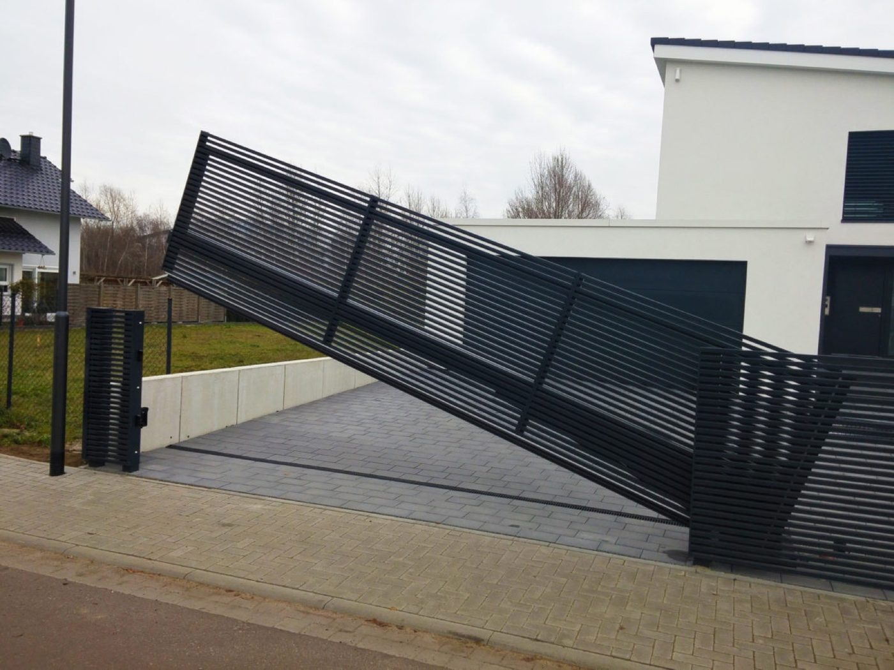
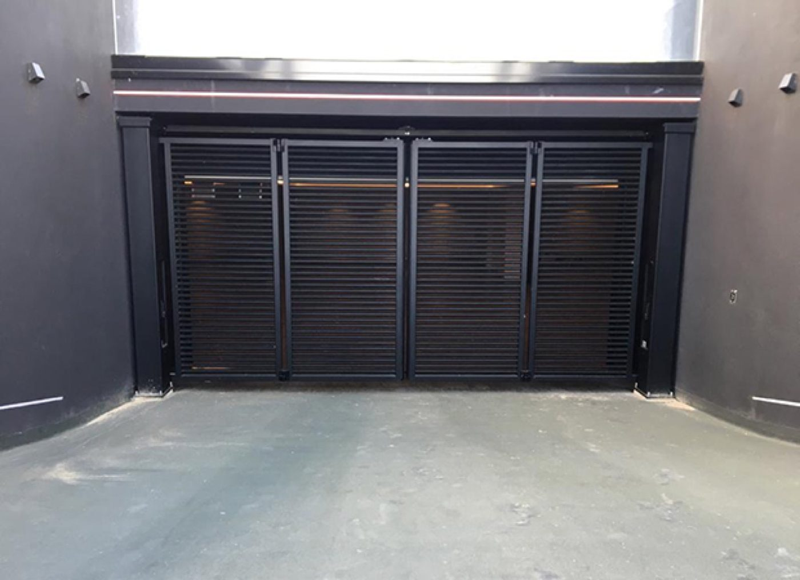

Schiebetor
Fährt seitlich an der Einfahrt entlang und braucht keinen Schwenkbereich. Die erste Wahl bei Gefälle oder wenig Platz vor dem Grundstück.
- Kein Schwenkraum nötig
- Auch für breite Einfahrten
- Laufschiene oder freitragend
Schiebetor, Drehflügeltor oder Gartentür in Echtholz, Aluminium oder Stahl. Mit Lamellen, Latten oder geschlossener Füllung, auf Wunsch mit Antrieb und Zutrittstechnik.

Sie fahren jeden Tag hindurch, Ihre Gäste sehen es zuerst. Deshalb planen wir das Tor zusammen mit Einfahrt, Zaun und Fassade: Material, Höhe und Optik stimmen, gefertigt wird auf das Maß Ihrer Öffnung.
Was passt, entscheiden Platz, Gelände und Nutzung. Beim Termin vor Ort zeigen wir Ihnen, was auf Ihrem Grundstück funktioniert.

Fährt seitlich an der Einfahrt entlang und braucht keinen Schwenkbereich. Die erste Wahl bei Gefälle oder wenig Platz vor dem Grundstück.
Ein- oder zweiflügelig, öffnet nach innen oder außen. Klassisch in der Optik, robust in der Technik und mit vielen Füllungen zu haben.
Der Eingang für Fußgänger, neben Tor oder Zaun. Im selben Design wie Hoftor und Garagentor und mit eigenem Schloss.
Wie viel man von der Straße aus sieht, entscheiden Sie mit der Füllung. Offene Lamellen wirken leicht, senkrechte oder waagerechte Latten klassisch, geschlossene Paneele schützen vor fremden Blicken.
Dazu wählen Sie Echtholz, Aluminium oder Stahl, jeweils in Ihrer Wunschfarbe oder in Holzoptik.
Muster anfordernWir bauen jedes Tor für Ihre Einfahrt. Auch bei Gefälle, Kurven oder ungewöhnlichen Breiten.
Leiser Elektroantrieb, bedient per Handsender, Funk-Codetaster oder App. Für Schiebe- und Drehflügeltore.
Gegensprechanlage, Kamera und Zutritt per Transponder, Code oder App. Auch zum Nachrüsten.
Einklemmschutz und sichere Endlagen hat jeder Antrieb. Einbruchhemmende Beschläge gibt es je nach Modell.
Alle RAL-Farben, Holzdekore und Lasuren, passend zu Garagentor, Fassade und Haustür.
Unsere eigenen Servicetechniker montieren, prüfen jährlich und helfen schnell, wenn etwas klemmt.
Richtwerte für Ihre Planung. Die genaue Ausführung legen wir beim Aufmaß gemeinsam fest.
| Bauarten | Schiebetor, Drehflügeltor (ein- oder zweiflügelig), Gartentür |
|---|---|
| Breite und Höhe | Nach Maß, Sonderbreiten und Gefälleausgleich auf Anfrage |
| Material | Echtholz, Aluminium, Stahl |
| Füllung | Lamellen, senkrechte oder waagerechte Latten, geschlossene Paneele |
| Oberflächen | Alle RAL-Farben, Holzdekore und Lasuren |
| Antrieb | Elektrisch mit Handsender, Codetaster, App; manuell möglich |
| Zutritt | Gegensprechanlage, Kamera, Transponder oder Codeschloss auf Wunsch |
| Leistung | Beratung, Aufmaß, Lieferung, Montage, Wartung und Reparatur |
Bei Gefälle, wenig Platz vor der Einfahrt oder sehr breiten Öffnungen ist das Schiebetor meist die bessere Wahl, weil es keinen Schwenkbereich braucht. Auf ebenem Gelände mit genug Platz spielt das Drehflügeltor seine klassische Optik aus. Wir sehen uns das vor Ort gemeinsam an.
Ja. Wir stimmen Material, Farbe und Design von Hoftor, Garagentor und Haustür aufeinander ab. So wirkt Ihr Grundstück wie aus einem Guss.
Ja, Schiebetore und Drehflügeltore lassen sich gleichermaßen elektrisch antreiben. Welcher Antrieb passt, hängt von Gewicht, Breite und Untergrund ab. Das klären wir beim Aufmaß.
Nach dem Aufmaß bekommen Sie Ihr Angebot. Die Fertigung dauert je nach Modell und Material mehrere Wochen. Sobald der Liefertermin steht, vereinbaren wir den Montagetermin mit Ihnen. Und Termin ist Termin.
Rufen Sie an oder schicken Sie uns Maße und ein paar Fotos Ihrer Einfahrt. Wir melden uns innerhalb eines Werktags.